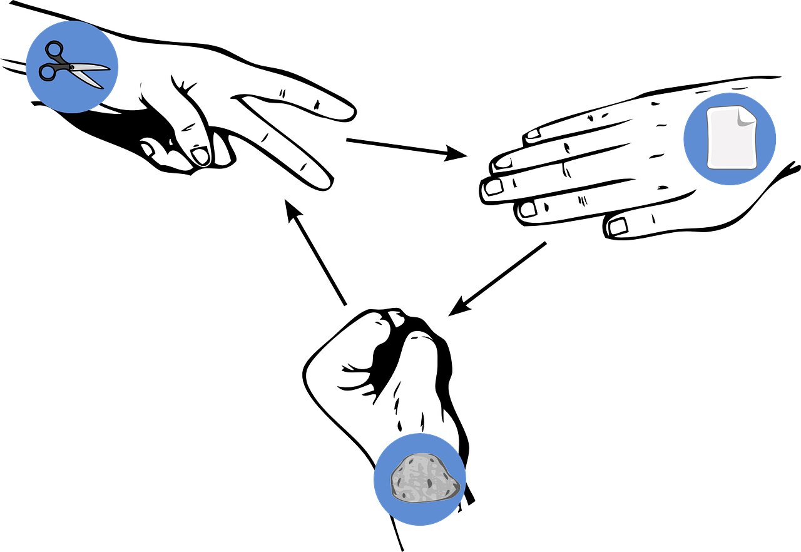

Rock Paper
Scissors Lizard Spock

Pop Culture Info Nuggets
- The game was popularized in the TV show "The Big Bang Theory"
- There genius theoretical Physicist Sheldon Cooper introduces this version of the game to show off
his to his friends
- Originally, Blogger Sam Kass came up with the variation of the game together with Karen Bryla, with
the former claiming
that the show producer didn't ask permission to use it in The Big Bang Theory
- The show rectified this behind-the-scenes resulting in Sheldon finally giving Kass the credit he
deserved
for it in season 5, episode 17 titled "The Rothman Disintegration."
.